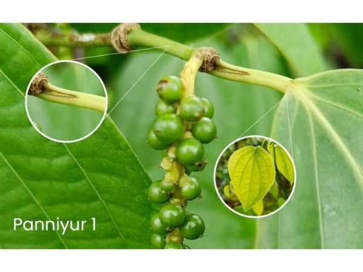

Piper nigrum 'Panniyur'
Common Names: Black Pepper, Panniyur Pepper, Panniyur-1
Local Name: Milagu (Tamil), Kali Mirch (Hindi), Kurumulaku (Malayalam)
Family: Piperaceae
Origin: Kerala, India (developed at Pepper Research Station, Panniyur)
Plant Type: Perennial climbing vine, 10+ meters
Variety: Panniyur-1 (hybrid of Uthirankotta × Cheriyakaniyakkadan)
Average Lifespan: 25–30 years (productive for 20+ years)
| Growth Habit | Vigorous perennial woody climber with adventitious roots at nodes for clinging to support |
| Plant Size | 10+ meters when grown on standard trees; managed to 5–6 m on columns |
| Leaves | Alternate, simple, ovate-cordate, 12–18 cm long, dark green, leathery with prominent veins |
| Flowers | Tiny, white to yellowish-green, borne on pendulous spikes (catkins) 8–15 cm long |
| Flower Characteristics | Protogynous; female phase precedes male phase; 50–150 flowers per spike |
| Fruit | Spherical drupes (peppercorns), 4–6 mm diameter, larger than most varieties; borne in dense spikes |
| Fruit Color | Green when immature, turning red at maturity; black when dried |
| Seed Characteristics | Single seed per drupe; bold berries with high piperine content |
| Root System | Adventitious roots at nodes for climbing; fibrous feeding roots at base |
| Climate | Tropical; warm and humid with well-distributed rainfall |
| Temperature Range | 20–30°C ideal; tolerates up to 40°C with shade; sensitive to frost |
| Rainfall Requirement | 1500–2500 mm annually; well-distributed; dry spell needed for flowering |
| Soil Type | Well-drained red laterite or loamy soil rich in organic matter |
| Soil pH Preference | 5.5–6.5 (slightly acidic) |
| Sun Requirement | Partial shade to filtered sunlight; 50–60% shade ideal for young vines |
| Spacing | 2.5–3 meters between standards (support trees or columns) |
| Irrigation Method | Drip irrigation or basin irrigation; critical during summer months |
| Water Requirement | Moderate to high; consistent moisture but excellent drainage essential |
| Can it Grow in Pots? | Yes, in large pots (30+ liters) with trellis support; yield will be limited |
| Fertilizer Schedule | Apply NPK (100:40:140 g per vine) in split doses; May–June and September–October |
| Recommended Organic Fertilizers | Well-decomposed FYM (10 kg/vine), neem cake (1 kg), bone meal, vermicompost |
| Pesticide Frequency | Preventive sprays during monsoon; Bordeaux mixture 1% before and after monsoon |
| Recommended Organic Pesticides | Bordeaux mixture, neem oil, Trichoderma viride for soil application |
| Mulching Practice | Thick organic mulch (green leaves, coconut husk) around base; essential for moisture retention |
| Training System | Trained on living standards (Erythrina, Gliricidia) or concrete/granite columns |
| Pruning Time | After harvest (February–March); prune support trees before monsoon |
| How to Prune | Remove trailing runners; tie back climbing shoots; prune shade trees to regulate light |
| Common Pests | Pepper lace bug, pollu beetle, top shoot borer, root-knot nematode |
| Common Diseases | Quick wilt (Phytophthora capsici), slow decline, anthracnose, stunt disease |
| Disease Prevention & Remedies | Good drainage, Bordeaux mixture prophylaxis, Trichoderma application, avoid waterlogging |
| Flowering Months | May–June (with onset of southwest monsoon) |
| Fruiting Season | November–February; spikes mature 6–8 months after flowering |
| Days to Harvest | 180–240 days from flowering; first harvest in 3rd year after planting |
| Harvest Indicators | One or two berries on spike turn red/orange; spike still mostly green for black pepper |
| Average Yield per Plant | 2–5 kg dry pepper per vine per year (high-yielding variety); up to 8 kg in ideal conditions |
| Pollination Type | Primarily self-pollination; wind and rain-assisted |
| Pollination Notes | Protogynous flowers; cross-pollination can occur between adjacent spikes; rain aids pollen transfer |
| Pollination Details | Self-fertile; stigma receptive before pollen release; rain splash aids pollination |
| Propagation by Seeds | Possible but not recommended; seedlings are variable and slow to fruit (5+ years) |
| Propagation by Cuttings | 2–3 node stem cuttings from runner shoots; root in polybags with sand-soil mix; 45–60 days to root |
| Propagation by Grafting | Not commonly practiced; serpentine layering used as alternative vegetative method |
| Water Usage | Moderate; efficient with drip irrigation and mulching |
| Soil Conservation Practices | Grown under shade trees that prevent erosion; mulching conserves topsoil |
| Organic Practices Used | Organic pepper fetches premium; Trichoderma-based disease management, FYM, neem cake |
| Companion Plants | Coconut, arecanut, coffee (as shade providers); banana, ginger as intercrops |
| Biodiversity Benefits | Multi-tier cropping system supports diverse ecosystem; shade trees host beneficial organisms |
| Commercial Production Regions | Kerala, Karnataka, Tamil Nadu (India); Vietnam, Indonesia, Brazil globally |
| Market Uses | Whole black pepper, white pepper, ground pepper, pepper oil, oleoresin |
| Processing Uses | Pepper oil extraction, oleoresin for food industry, pharmaceutical piperine |
| Market Value (Approx.) | ₹400–700 per kg (dry black pepper); premium for organic certified |
| Symbolism | Known as "Black Gold" and "King of Spices"; historically traded as currency in ancient world |
| Traditional Uses | Central to Ayurvedic medicine (Trikatu formulation); essential in South Indian cuisine and temple offerings |
| Anxiety & Sleep | Piperine enhances bioavailability of curcumin and other compounds; mild warming effect |
| Immune Support | Rich in antioxidants; piperine has immunomodulatory properties |
| Anti-inflammatory Properties | Piperine demonstrates significant anti-inflammatory activity in studies |
| Heart Health | May improve cholesterol metabolism; enhances nutrient absorption |
| Digestive Health | Stimulates digestive enzymes; used in traditional medicine for digestive ailments; carminative |
Disclaimer: Information provided is for educational purposes only and not a substitute for medical advice.
Add your field observations here.